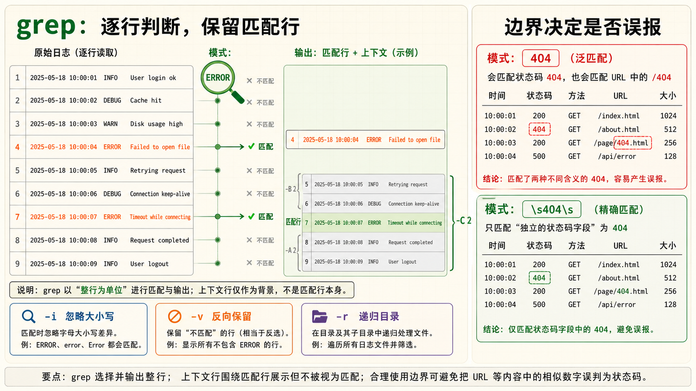
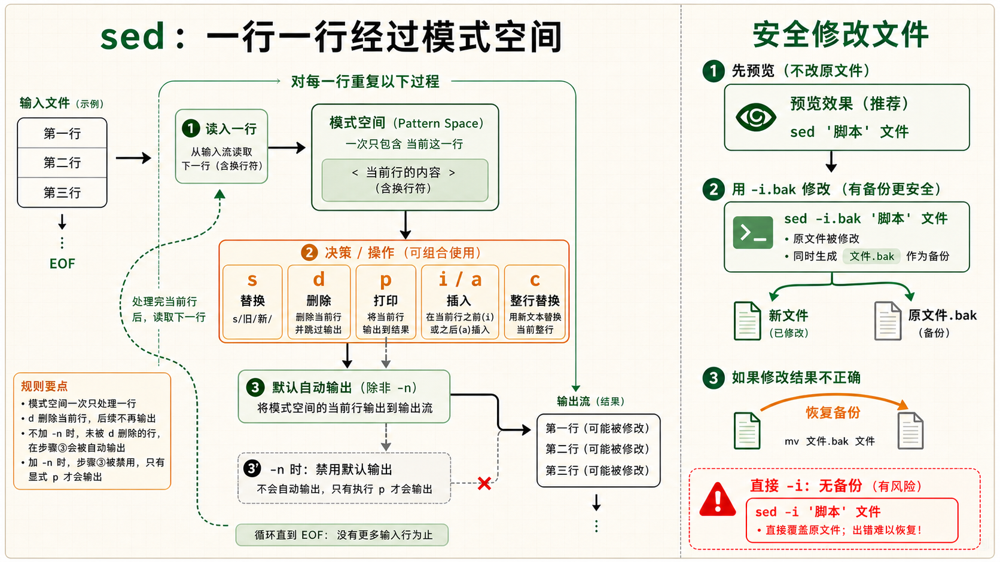
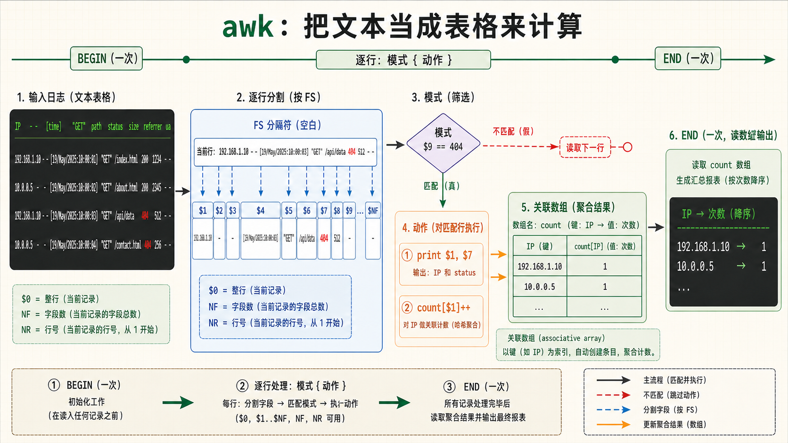
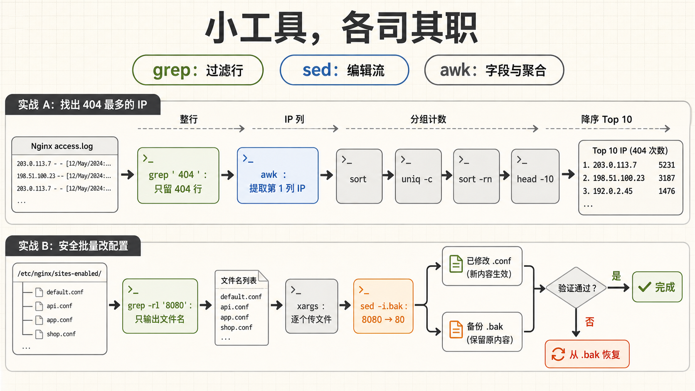

1grep 搜索大师
grep —— 文本搜索之王，运维工程师使用频率最高的命令
基础grep 的本质
grep（Global Regular Expression Print）的功能说起来极其简单：从文本中找出包含指定模式的行，打印出来。但就是这么一个看似简单的操作，构成了运维日常工作的 30%。查日志、找配置、看进程——几乎每一件事都从 grep 开始。
# 最基础的用法：在文件中搜索包含指定字符串的行
grep "ERROR" /var/log/app.log
# 从管道接收数据（这才是 grep 最常见的用法！）
cat /var/log/nginx/access.log | grep "404"
ps aux | grep nginx
dmesg | grep -i error必知的 10 个参数——每个都能让你的效率翻倍
| 参数 | 作用 | 典型场景 |
|---|---|---|
-i | 忽略大小写 | grep -i "error" app.log——连 Error 和 ERROR 一起匹配 |
-v | 反转匹配（打印不匹配的行） | grep -v "#" config.conf——过滤掉注释行 |
-r | 递归搜索目录 | grep -r "TODO" src/——在所有子目录中找 TODO |
-n | 显示行号 | grep -n "function" script.sh——告诉我函数在第几行 |
-c | 计数（输出匹配行数而非内容） | grep -c "404" access.log——今天有多少个 404 |
-l | 只显示包含匹配的文件名 | grep -rl "password" /etc/——哪些配置文件里有 password |
-w | 匹配整个单词 | grep -w "is" file.txt——只匹配单词 is，不匹配 this |
-A N | 显示匹配行及之后 N 行（After） | grep -A 5 "error" log——看错误后的上下文 |
-B N | 显示匹配行及之前 N 行（Before） | grep -B 3 "error" log——看错误前的上下文 |
-C N | 显示匹配行前后各 N 行（Context） | grep -C 5 "error" log——看错误前后的完整上下文 |
-E —— 开启扩展正则的万能钥匙
默认 grep 使用基本正则（BRE），需要转义 +、?、|、{、}、(、) 这些符号——非常麻烦。加上 -E 就启用扩展正则（ERE），这些符号不用转义，写起来流畅很多。实际上 egrep 就是 grep -E 的别名。
# 不用 -E：每个特殊符号都要加反斜杠转义
grep "error\|fail\|warn" app.log # 匹配 error 或 fail 或 warn
# 用了 -E：清爽很多
grep -E "error|fail|warn" app.log # 等价于上面，但不需要转义
# 正则组合示例
grep -E "[0-9]{1,3}\.[0-9]{1,3}\.[0-9]{1,3}\.[0-9]{1,3}" access.log # 找 IP
grep -E "2026-07-3[0-1] [0-2][0-9]:[0-5][0-9]" app.log # 找特定时间段
grep -iE "^(error|fatal|critical)" app.log # 找日志开头是这些的--include 和 --exclude —— 精确控制搜索范围
# 只在 .log 文件中搜索
grep -r "ERROR" /var/log/ --include="*.log"
# 排除二进制文件和压缩包
grep -r "password" /etc/ --exclude="*.{gz,bz2,png}"
# 排除整个目录
grep -r "pattern" . --exclude-dir={node_modules,.git,.cache}--binary-files=without-match 跳过二进制文件，避免误匹配二进制数据。如果只需要"文件里有没有这个字符串"，用 grep -l 而不是 grep -c——前者找到第一个匹配就停止读文件，后者需要读完全文。2grep 高级实战
查日志三板斧——每天都要用的 grep 组合技
实战实战 1：在 Nginx 所有站点配置中找一个域名
# 在 /etc/nginx/ 下所有子目录的 .conf 文件中搜索 example.com
grep -r "example.com" /etc/nginx/ --include="*.conf" -n
# 输出示例：
# /etc/nginx/sites-enabled/myapp.conf:12: server_name example.com www.example.com;
# /etc/nginx/sites-enabled/myapp.conf:45: proxy_pass http://backend.example.com:8080;
# 直接告诉你文件、行号、内容——改哪里一目了然实战 2：从 Nginx 日志中统计各种错误
# 统计 404 错误的总次数
grep -c " 404 " /var/log/nginx/access.log
# 只看最近 1000 行里的 404
tail -1000 /var/log/nginx/access.log | grep -c " 404 "
# 找所有非 200 和 304 的请求（排除正常请求和缓存命中）
grep -vE " (200|304) " access.log | head -20
# 找出所有包含 "ERROR" 的日志行及其前后 2 行上下文
grep -C 2 "ERROR" /var/log/app.log --color=auto实战 3：过滤注释和空行——看"有效配置"
# 很多配置文件注释比有效行还多
# 只看真正起作用的配置行（排除注释和空行）
grep -vE '^\s*(#|$)' /etc/ssh/sshd_config
# 或者等价写法
grep -v '^#' /etc/ssh/sshd_config | grep -v '^$'▶ 输出效果（原来 120 行的配置文件变成 30 行有效配置）
实战 4：从系统日志中找出 OOM Killer 杀掉的进程
# 找出被 OOM Killer 杀掉的进程
dmesg | grep -i "killed process"
# 更详细的 OOM 分析
dmesg | grep -A 5 -B 2 -i "out of memory"实战 5：按时间范围搜索——配合 journalctl 或 syslog
# 从 syslog 中找出今天下午 2-4 点之间的 sshd 登录记录
grep "sshd.*Accepted" /var/log/auth.log | grep -E "Jul 31 (14|15|16):"
# 找出所有 root 用户执行的 sudo 命令
grep "sudo.*COMMAND" /var/log/auth.log | grep "USER=root"grep "404" access.log 也会匹配 /page/404.html 这种 URL 路径中包含 404 的行，未必是真正的 404 状态码。更精确的写法是 grep '" 404 ' 或 grep -E '\s404\s'，用空格限定边界。在日志分析中，精确匹配比泛匹配重要得多。
3sed 流编辑器
sed —— 不是让你打开 vim 一行行改，是一口气改完百万行
基础sed 的设计哲学
sed（Stream Editor）名字里自带"流"——它处理的是流动的文本数据，一行一行地读入、加工、输出。它的设计哲学是：默认不修改原文件，把修改后的内容输出到屏幕上。只有加了 -i 参数才会原地修改。这个设计让你在改动生效前总能先看效果。
最核心的操作：查找替换 s/old/new/
sed 最常用的模式是 s/模式/替换内容/标志。90% 的 sed 使用场景都是查找替换。
# 基本替换：将每行的第一个 old 替换为 new
sed 's/old/new/' file.txt
# 全局替换：将该行所有的 old 都替换（g = global）
sed 's/old/new/g' file.txt
# 查看效果（不修改文件），确认无误后再加 -i
sed 's/8080/80/g' nginx.conf # 先看看改了什么
sed -i 's/8080/80/g' nginx.conf # 确认无误，原地修改替换标志详解
| 标志 | 含义 | 示例 |
|---|---|---|
g | 全局替换（一行中所有匹配项都替换） | s/a/b/g |
2 | 只替换每行的第 2 个匹配 | s/a/b/2 |
i | 忽略大小写 | s/error/critical/i |
p | 打印被修改的行 | s/a/b/p（常配合 -n 使用） |
sed -i 的三种安全用法
# 方式1：-i 加备份后缀（最安全！自动生成备份文件）
sed -i.bak 's/port 8080/port 80/g' nginx.conf
# 修改后原文件变成 nginx.conf.bak，nginx.conf 是新文件
# 方式2：-i 直接原地修改（无备份，谨慎！）
sed -i 's/port 8080/port 80/g' nginx.conf
# 方式3：先 dry-run 确认，再 -i
sed 's/port 8080/port 80/g' nginx.conf | grep --color "port 80"
# 确认替换结果符合预期，再执行
sed -i 's/port 8080/port 80/g' nginx.conf实战：批量修改 Nginx 所有站点配置的端口
# 将所有站点配置中的 8080 改为 80（先备份！）
sed -i.bak 's/8080/80/g' /etc/nginx/sites-enabled/*
# 如果改错了，用备份文件恢复
for f in /etc/nginx/sites-enabled/*.bak; do
mv "$f" "${f%.bak}"
donesed 正则替换——比基本替换更强大
# 使用 & 引用整个匹配到的文本
echo "Hello World" | sed 's/.*/[&]/'
# 输出: [Hello World]
# 使用 \1 \2 引用捕获组（用 \( \) 包裹分组）
echo "server=localhost port=3306" | sed 's/.*server=\([^ ]*\).*port=\([^ ]*\).*/\1:\2/'
# 输出: localhost:3306
# -E 启用扩展正则（更清晰）
echo "server=localhost port=3306" | sed -E 's/.*server=([^ ]*).*port=([^ ]*).*/\1:\2/'
# 输出: localhost:3306-n；做过滤/范围选择时通常需要 -n + p 来抑制默认输出。4sed 进阶操作
不止查找替换——sed 的 5 种高级操作模式
进阶操作 1：删除行 d（delete）
# 删除匹配 pattern 的行
sed '/DEBUG/d' app.log
# 删除第 5 到第 10 行
sed '5,10d' file.txt
# 删除空行
sed '/^$/d' config.conf
# 删除注释行（以 # 开头的行）
sed '/^#/d' config.conf
# 一行删除空行和注释（用 ; 或 -e 连接多条命令）
sed -e '/^$/d' -e '/^#/d' /etc/ssh/sshd_config操作 2：打印特定行 p（print）
用 -n 抑制 sed 的默认输出，再用 p 明确告诉 sed 打印哪些行。这其实是一种"精准行提取"操作。
# 打印第 20 到第 30 行
sed -n '20,30p' access.log
# 打印包含 "ERROR" 的行
sed -n '/ERROR/p' app.log
# 从 "START" 到 "END" 之间的所有行
sed -n '/START/,/END/p' file.txt
# 打印文件的最后 10 行（等价于 tail -10）
sed -n '$p; $p; N; 7,$D; $p' file.txt # 这只是演示，实际用 tail 就行操作 3：在特定行前/后插入文本 i/a（insert/append）
# 在第 3 行之前插入一行
sed '3i\# === 这是新插入的注释 ===' file.txt
# 在最后一行之后追加内容
sed '$a\# 文件末尾' file.txt
# 在匹配 "Listen 80" 的行后面加一行
sed '/Listen 80/a\ # 这是新增的注释' httpd.conf操作 4：整行替换 c（change）
# 把包含 "Listen 80" 的行整行替换为新内容
sed '/Listen 80/c\Listen 443' httpd.conf操作 5：多条件组合——sed 脚本
用 -e 串联多条 sed 命令，或用 ; 分隔，复杂操作可以写进一个文件当脚本用。
# 一条 sed 命令做三件事：删空行、删注释、替换端口
sed -e '/^$/d' -e '/^#/d' -e 's/8080/80/g' nginx.conf
# 将多条 sed 命令写进文件（sed 脚本）
cat > cleanup.sed << 'EOF'
/^$/d
/^#/d
s/ localhost / 0.0.0.0 /g
s/ 8080 / 80 /g
EOF
sed -f cleanup.sed nginx.conf-i 的行为上不同。macOS 要求 sed -i '' 's/a/b/g' file（必须带备份后缀参数），Linux 可以 sed -i 's/a/b/g' file。如果你的脚本需要在 macOS 和 Linux 上通用，要么用 sed -i.bak 然后删掉 .bak，要么用 perl 替代 perl -i -pe 's/a/b/g' file。
5awk 文本分析
awk —— 不只是"打印第 N 列"，是一台完整的文本数据分析引擎
核心awk 的本质：表格化数据处理
awk 的思维模型非常简单而强大：把每一行文本按分隔符切成若干个字段（field），然后你可以像操作数据库表格一样处理这些字段——$1 是第一列，$2 是第二列，$NF 是最后一列，$0 是整行。它的默认分隔符是空白字符（空格和 Tab），所以处理日志（典型的是空格分隔的列）天然匹配。
# 最简单的 awk：打印每一行的第 1 和第 3 列
awk '{print $1, $3}' data.txt
# 从管道读取（最常用的方式）
ls -l | awk '{print $9, $5}' # 打印文件名和大小
ps aux | awk '{print $1, $2, $11}' # 打印用户名、PID、命令核心语法：模式-动作 对
awk 的核心语法是 模式 { 动作 }：对匹配"模式"的每一行执行"动作"。模式可以是正则表达式、条件判断或特殊的 BEGIN/END；动作就是你想做的操作。
# 只有一个模式（没有动作）：默认动作是 print $0（打印整行）
awk '/ERROR/' app.log # 等价于 awk '/ERROR/ {print $0}' app.log
# 只有动作（没有模式）：对每一行都执行
awk '{print $1}' access.log # 打印每行的第一列
# 模式 + 动作：只处理包含 ERROR 的行
awk '/ERROR/ {print $1, $2, $3}' app.logawk 的内置变量——你的数据分析工具箱
| 变量 | 含义 | 典型用途 |
|---|---|---|
$0 | 当前行的完整内容 | 打印整行、判断整行 |
$1, $2, ... | 第 1 列、第 2 列... | 提取指定字段 |
$NF | 最后一列 | 动态取最后一列，不管有多少列 |
NF | 当前行的列数 | awk 'NF>10'——只打印超过 10 列的行 |
NR | 当前行号（从 1 开始） | awk 'NR>=10 && NR<=20'——打印 10-20 行 |
FNR | 当前文件内的行号 | 处理多文件时，NR 累积，FNR 每个文件重置 |
FS | 输入字段分隔符（默认空格/Tab） | 用 -F':' 或 FS=":" 设置 |
OFS | 输出字段分隔符（默认空格） | OFS="," 输出 CSV 格式 |
RS | 输入记录分隔符（默认换行） | 设 RS="" 按段落分隔 |
-F 分隔符——处理 CSV、冒号分隔、等号分隔的文件
用 -F',' 切分只适合不含引号内逗号、转义与换行的简单数据；标准 CSV 请使用专门的 CSV 解析工具，不能把任意 CSV 当成简单分隔文本。
# 处理 /etc/passwd（冒号分隔）
awk -F':' '{print $1, $3, $7}' /etc/passwd
# 输出：root 0 /bin/bash
# 处理 CSV 文件（逗号分隔）
awk -F',' '{print $1, $3}' data.csv
# 处理空格和逗号混合的分隔符
awk -F'[, ]+' '{print $1, $2}' messy_data.txtBEGIN 和 END —— 预处理和汇总
BEGIN 块在处理任何输入行之前执行一次（用于初始化），END 块在处理完所有输入行之后执行一次（用于输出汇总结果）。
# BEGIN：打印表头
printf 'a.txt 12 rw-r--r--\nb.txt 30 rw-------\n' | awk 'BEGIN {print "文件名\t大小\t权限"} {print $1, $2, $3}'
# END：计算总和和平均值
awk '{sum += $3} END {print "总和:", sum; if (NR) print "平均值:", sum/NR; else print "没有数据"}' data.txt
# BEGIN + END：完整的报告
awk '
BEGIN { print "===== 磁盘使用报告 =====" }
{ usage[$1] = $5 }
END {
for (fs in usage) {
print fs, usage[fs]
}
print "===== 报告结束 ====="
}
' < <(df -h)6awk 数据处理实战
真正的生产力——awk 数据聚合、统计、格式化实战
实战实战 1：列求和与平均值
# 对第 3 列所有值求和，最后打印平均值（NR=总行数）
awk '{sum += $3} END {print "总和:", sum, "平均值:", sum/NR}' data.txt
# 只看第 5 列大于 1000 的行的第 3 列总和
awk '$5 > 1000 {sum += $3} END {print sum}' data.txt▶ 示例数据 data.txt
John 80 1750
Alice 92 2100
Bob 65 1350
# awk '...' → 总和: 5200, 平均值: 1733.33实战 2：关联数组统计——IP 访问次数排行榜
这是 awk 最强大的功能：用关联数组（associative array）做数据聚合。数组的键可以是任何字符串，值可以是数字或字符串。每次遇到相同的键，就把值加上去——天然适合做频次统计。
# 统计每个 IP 的请求次数——Nginx 日志分析必用
awk '{ip[$1]++} END {for (i in ip) print ip[i], i}' access.log | sort -rn | head -10▶ 输出
15234 10.0.0.100
8921 10.0.0.200
4567 10.0.0.50
3120 192.168.1.1
# 10.0.0.100 发出了 15234 个请求——这个 IP 需要重点关注实战 3：统计 HTTP 状态码分布
# Nginx access.log 中，状态码通常是 $9
awk '{status[$9]++} END {for (s in status) printf "%s: %d\n", s, status[s]}' access.log | sort
# 带百分比
awk '{status[$9]++; total++} END {for (s in status) printf "%s: %d (%.1f%%)\n", s, status[s], status[s]/total*100}' access.log▶ 输出
200: 48520 (92.3%)
301: 1230 (2.3%)
404: 2340 (4.5%)
500: 480 (0.9%)
# 一眼看出服务器状态——500 错误占 0.9%，需要排查实战 4：按时间段统计带宽——找出流量高峰
# access.log 格式：[31/Jul/2026:14:30:00 +0800]
# 提取小时，按小时统计字节数
awk '{
split($4, a, ":") # 切分时间戳字段
hour = substr(a[1], length(a[1])-1) # 提取小时
bytes[hour] += $10 # 字节数通常是第 10 列
}
END {
for (h in bytes) printf "%s:00 - %.2f MB 请求\n", h, bytes[h]/1024/1024
}' access.log | sort实战 5：awk 做计算——比 Excel 还快
# 计算第 3 列的最大值、最小值
awk 'NR==1{max=$3; min=$3}
{if($3>max) max=$3; if($3<min) min=$3}
END{print "最大:", max, "最小:", min}' data.txt
# 计算平均响应时间（第 10 列是响应时间，单位为微秒）
awk '{sum+=$10; count++} END {print "平均响应时间:", sum/count/1000, "ms"}' access.log
# 中位数（P50 响应时间）
awk '{a[NR]=$10} END {
asort(a)
if (NR%2) print a[int(NR/2)+1]
else print (a[NR/2]+a[NR/2+1])/2
}' access.logprintf 函数：printf "%-20s %10d\n", $1, $2——左对齐 20 字符宽字符串，右对齐 10 字符宽整数。在处理数据报告时非常好用。格式占位符：%s（字符串）、%d（整数）、%f（浮点数）、%10.2f（宽10字符，保留2位小数）。
7三剑客管道组合
一加一加一大于三 —— grep + sed + awk 协同作战
综合实战组合哲学：每个工具只做自己最擅长的事
三剑客真正的威力不在于单独使用，而在于管道组合。grep 负责过滤（找到目标行），sed 负责编辑（查找替换），awk 负责分析（统计聚合）。三者各司其职，数据在管道中流转——这就是 Unix 哲学："小工具，大组合"。
综合实战 1：找出产生 404 错误最多的前 10 个 IP
这是运维工作中最经典的三剑客协作案例——一条命令定位攻击者或爬虫。
# step1: grep 过滤出包含 404 的行
# step2: awk 提取 IP（第1列）
# step3: sort 排序（让 uniq 能正确统计）
# step4: uniq -c 统计每个 IP 出现的次数
# step5: sort -rn 按次数降序
# step6: head -10 取前 10 名
grep ' 404 ' /var/log/nginx/access.log \
| awk '{print $1}' \
| sort \
| uniq -c \
| sort -rn \
| head -10▶ 输出
15234 10.0.0.100 # ← 这个 IP 有 15234 个 404 请求
8921 10.0.0.200 # 很可能是扫描器或恶意爬虫
4567 10.0.0.50
234 192.168.1.10
89 172.16.0.5
# 把 10.0.0.100 加入 Nginx 黑名单或防火墙拒绝列表综合实战 2：分析慢请求——哪些 URL 最慢
# 提取请求时间大于 1 秒的 URL（Nginx 日志中 $request_time 通常在第 10 列之后）
# step1: grep 不做过滤，用 awk 直接条件筛选
# step2: awk 条件 + 聚合
# step3: sort + head 取前 10
awk '$NF > 1 {url[$7]++; time[$7]+=$NF}
END {
for (u in url) printf "%.2fs %d次 %s\n", time[u]/url[u], url[u], u
}' access.log \
| sort -rn \
| head -10
# 输出示例：
# 5.23s 45次 /api/users/search
# 3.14s 120次 /api/reports/generate
# 2.01s 67次 /dashboard综合实战 3：跨文件批量配置修改
# 场景：把 /etc/nginx/sites-enabled/ 下所有配置文件的 8080 改为 80
# step1: grep -rl 找出包含 8080 的所有文件
# step2: xargs 将文件名传给 sed
# step3: sed -i.bak 批量修改（先备份！）
grep -rlZ '8080' /etc/nginx/sites-enabled/ | xargs -0 -r sed -i.bak 's/8080/80/g'
# 确认修改内容
grep -r 'port.*80' /etc/nginx/sites-enabled/
# 如果改错了，恢复
ls /etc/nginx/sites-enabled/*.bak # 确认备份存在
# 恢复一个文件：mv /etc/nginx/sites-enabled/myapp.conf.bak /etc/nginx/sites-enabled/myapp.conf综合实战 4：服务器安全审计——找 SSH 暴力破解
# 找出尝试登录失败超过 10 次的 IP（SSH 暴力破解检测）
grep "Failed password" /var/log/auth.log \
| awk '{print $(NF-3)}' \
| sort \
| uniq -c \
| sort -rn \
| awk '$1 > 10 {print $2, "失败", $1, "次"}'▶ 输出
203.0.113.50 失败 342 次 # ← 典型的暴力破解！封禁这个 IP
198.51.100.23 失败 156 次
192.0.2.99 失败 23 次三剑客协作黄金法则

grep → awk → sort → uniq → sort
经典的"查找-提取-统计-聚合"流水线：grep 过滤 → awk 提取字段 → sort 排序 → uniq -c 计数 → sort -rn 降序 → head 取 top N。
grep → xargs → sed
批量修改前先用 grep -rl 预览文件列表；实际传递文件名时使用 grep -rlZ | xargs -0 -r，避免空格、换行文件名被拆开，并让 sed -i.bak 保留可回退的副本。此例的替换会影响所有包含该数字的内容，生产配置应先缩小文件范围并检查 diff。
awk 一条就够了
简单的过滤、提取与计数可以用一条 awk 完成；需要按数值大小排序时，常仍需接 sort -n，因为可移植 awk 不保证数组遍历顺序。对可读性和数据规模权衡，没必要强制把所有步骤压成一条命令。
grep；流式替换适合 sed；字段计算与聚合适合 awk。组合时优先保证结果正确、文件名处理安全和命令易读，再根据实测决定是否优化性能。注解
HTTP · Hypertext Transfer Protocol 超文本传输协议
URL · Uniform Resource Locator 统一资源定位符